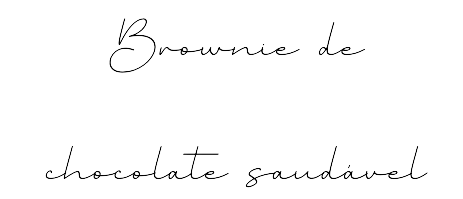

Ingredientes
1 xícara e 1/2 de farinha de castanha do Pará;
3 ovos;
2 colheres de sopa de cacau em pó;
8 tâmaras grandes, sem caroço, deixadas de molho por 6 horas;
1 colher de chá de fermento químico;
1/3 xícara de chocolate 70% cacau.